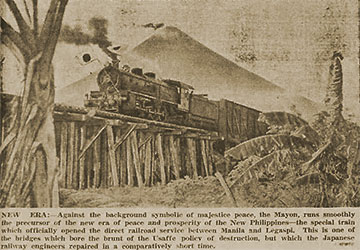

|
j
a v a s c r i p t |
March 24, 1943

New Bridge
Much ado in La Vanguardia about the first train to Legaspi, and I hear it was a lulu — 30 hours in crowded cars. The idea of stopping to stretch one's legs was out due to the guerilla threat. Two planes hovered overhead during daylight hours — just in case. On a bridge after Lucena, a trestle buckled and gave the passengers a good jolt. If not for the suspicious engineer driving slowly, they would have ended up in the drink. A picture shows the train crossing a primitive bridge made of logs, which brings up yesterday's Tribune on bridges: Railway experts from Japan were attached to the railway repair squad.... The major part of their energy, however, was concentrated on the restoration of the 16 bridges destroyed by explosions along the main southern line. Every one of those bridges has been rebuilt and made stronger than before the war. They have been constructed of steel.
A new ruling forbids the buying and selling of real estate for third party nationals, including the Japanese. Filipinos can buy from anyone and only sell to other Filipinos. The Japanese were tired of seeing Indians, Chinese, and their own, buying all the choice properties. Two thugs entered the residence of Apostolic Delegate Monsignor Piani and robbed him, taking only his crucifix and ring. Manila thinks it was a warning but isn't sure whether it was from the guerrillas or the Japanese. |
|
|
|
|